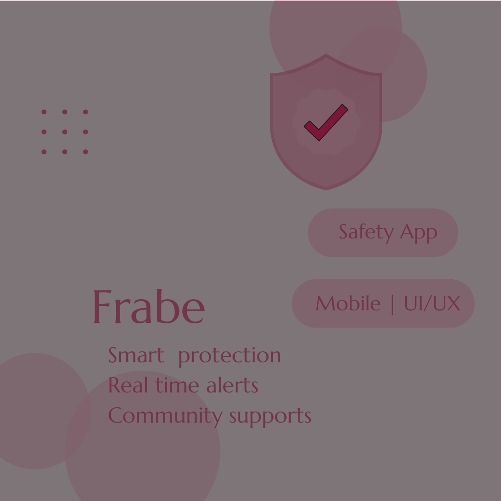
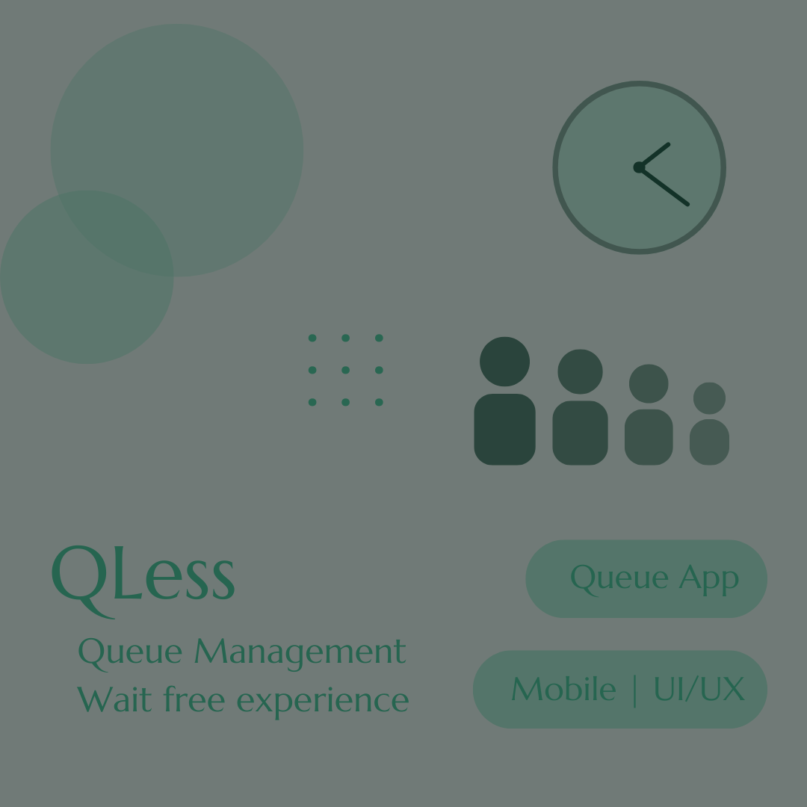
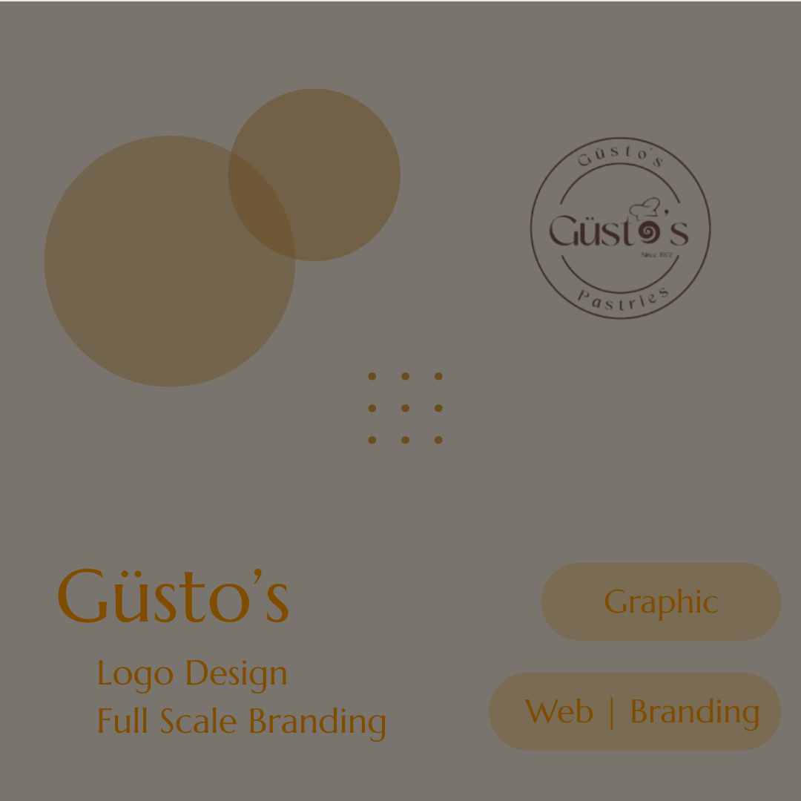

A UI/UX Designer who can easily connect with people and their ideas
"Design isn't just what it looks like and feels like. Design is how it works"-Steve Jobs
SCROLL

Women's safety analytics application design

Quick food pickup application design

An Italian based pastries shop branding
Available for freelance and full-time opportunities.